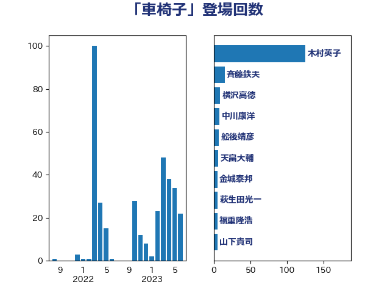

単語「車椅子」

| 木村英子 | れいわ新選組 | 125 回 |
| 斉藤鉄夫 | 公明党 | 15 回 |
| 横沢高徳 | 立憲民主党 | 9 回 |
| 中川康洋 | 公明党 | 8 回 |
| 舩後靖彦 | れいわ新選組 | 7 回 |
| 天畠大輔 | れいわ新選組 | 6 回 |
| 金城泰邦 | 公明党 | 5 回 |
| 萩生田光一 | 自由民主党 | 5 回 |
| 福重隆浩 | 公明党 | 5 回 |
| 山下貴司 | 自由民主党 | 5 回 |
| 吉田はるみ | 立憲民主党 | 5 回 |
| 仁木博文 | 無所属 | 5 回 |
| 鎌田さゆり | 立憲民主党 | 4 回 |
| 浅野哲 | 国民民主党 | 4 回 |
| 宮路拓馬 | 自由民主党 | 4 回 |
| 佐々木さやか | 公明党 | 4 回 |
| 牧原秀樹 | 自由民主党 | 3 回 |
| 東徹 | 日本維新の会 | 3 回 |
| 山下芳生 | 日本共産党 | 3 回 |
| 大河原まさこ | 立憲民主党 | 3 回 |
| 伊藤岳 | 日本共産党 | 3 回 |
| 伊藤孝江 | 公明党 | 3 回 |
| 井坂信彦 | 立憲民主党 | 3 回 |
| 須藤元気 | 無所属 | 2 回 |
| 石川大我 | 立憲民主党 | 2 回 |
| 田中昌史 | 自由民主党 | 2 回 |
| 猪瀬直樹 | 日本維新の会 | 2 回 |
| 水岡俊一 | 立憲民主党 | 2 回 |
| 木村次郎 | 自由民主党 | 2 回 |
| 新妻秀規 | 公明党 | 2 回 |
| 川田龍平 | 立憲民主党 | 2 回 |
| 大島九州男 | れいわ新選組 | 2 回 |
| 塩川鉄也 | 日本共産党 | 2 回 |
| 古屋範子 | 公明党 | 2 回 |
| 高良鉄美 | 無所属 | 1 回 |
| 高橋千鶴子 | 日本共産党 | 1 回 |
| 音喜多駿 | 日本維新の会 | 1 回 |
| 阿部知子 | 立憲民主党 | 1 回 |
| 谷田川元 | 立憲民主党 | 1 回 |
| 谷公一 | 自由民主党 | 1 回 |
| 西村康稔 | 自由民主党 | 1 回 |
| 自見はなこ | 自由民主党 | 1 回 |
| 米山隆一 | 立憲民主党 | 1 回 |
| 窪田哲也 | 公明党 | 1 回 |
| 福島みずほ | 社会民主党 | 1 回 |
| 石田昌宏 | 自由民主党 | 1 回 |
| 田村まみ | 国民民主党 | 1 回 |
| 田中健 | 国民民主党 | 1 回 |
| 滝波宏文 | 自由民主党 | 1 回 |
| 津島淳 | 自由民主党 | 1 回 |
| 永岡桂子 | 自由民主党 | 1 回 |
| 森屋隆 | 立憲民主党 | 1 回 |
| 松本剛明 | 自由民主党 | 1 回 |
| 打越さく良 | 立憲民主党 | 1 回 |
| 山田勝彦 | 立憲民主党 | 1 回 |
| 山添拓 | 日本共産党 | 1 回 |
| 山本佐知子 | 自由民主党 | 1 回 |
| 小泉進次郎 | 自由民主党 | 1 回 |
| 小川淳也 | 立憲民主党 | 1 回 |
| 小宮山泰子 | 立憲民主党 | 1 回 |
| 宮下一郎 | 自由民主党 | 1 回 |
| 大石あきこ | れいわ新選組 | 1 回 |
| 吉良よし子 | 日本共産党 | 1 回 |
| 吉田宣弘 | 公明党 | 1 回 |
| 丸川珠代 | 自由民主党 | 1 回 |
| 中島克仁 | 立憲民主党 | 1 回 |
| 一谷勇一郎 | 日本維新の会 | 1 回 |